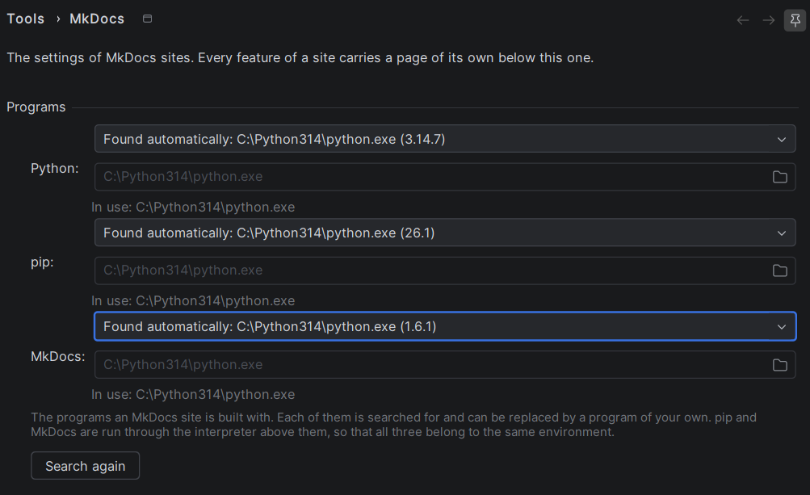
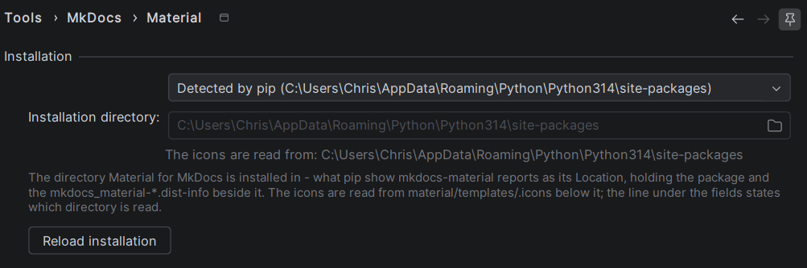

Settings
The settings of the plugin live under Tools → MkDocs. That page names the three programs a site is built with — Python, pip and MkDocs itself. Everything belonging to one feature of a site is not edited there: a feature carries a page of its own below it, and today there is one, Material. Both belong to the project rather than to the IDE, because both point into the environment of this project.
MkDocs

The programs a site is built with
A site is not built by the plugin but by the programs of the environment it lives in, and the page states for each of the three which one that is:
| Program | What it is for |
|---|---|
| Python | the interpreter the other two are run through |
| pip | what installs MkDocs and every feature of a site, and what is asked where they lie |
| MkDocs | what builds and serves the site |
Each of them is searched for, and each of them can be replaced by a program of your own. The search never
merely looks for a file: every candidate is run with --version, and only a candidate that answers with a
version of the program it was looked for as counts as found — which is why the entry naming it names the
version as well. A file lying where an interpreter is expected proves nothing; the answer does.
The candidates are tried in a fixed order, and the first one that answers wins:
- Python — the interpreter of the activated virtual environment, which
VIRTUAL_ENVnames, thenpython3andpythonfrom thePATH, and on Windows the launcherpy -3. What the entry shows is the path the interpreter reports of itself, not the name it was run under, so it is readable which of the interpreters on the machine answered. - pip and MkDocs — the interpreter that was found, run as
python -m pipandpython -m mkdocs, then the entry point of the same name from thePATH.
Deriving pip and MkDocs from the interpreter rather than looking them up on their own is what keeps the three
answers about one and the same environment. It is also what the search for a feature follows: pip show
mkdocs-material is asked through the interpreter named here, so a second pip lying on the PATH cannot
answer for an environment the site is not built with.
Pick A program of my own for every setup none of the candidates fits — an interpreter in a place nothing looks at, a system wide installation, a program mounted from a container. Only then does the field below the list become editable, and the button next to it opens a file chooser. What is wrong with a path is stated in red below the fields — nothing lies there, it names a directory, the file may not be run — and the page refuses to apply until it is right.
Otherwise that line states which program is actually run: a program of your own wins over the one that was found, and a line saying that no program is in use is the answer to a build that does nothing.
Note
Nothing is searched for again by itself, because none of the three changes by itself. The Search again
button at the foot of the group is what a program installed next to a running IDE is picked up with — a
pip install mkdocs in a terminal, or an environment created after the project was opened. Applying the
page does the same, and it also drops the answer of pip, because which pip answers follows the
interpreter named here.
Material

Installation directory
The icons of Material for MkDocs are not a list the plugin carries — they are the SVG files shipped inside
the installed package, so which ones exist depends on the version that is installed. Where that package lies
is asked of pip itself: the plugin runs pip show mkdocs-material and reads the Location it reports —
the site-packages directory holding the package and the mkdocs_material-*.dist-info beside it. Nothing
else is searched — no directory of the checkout is guessed at, because pip knows where the packages of the
interpreter in use lie. The icons are then read out of material/templates/.icons below it, and their names
out of the RECORD the installation itself wrote.
The page shows a fixed list: the installation that was found, named by its directory rather than calling itself a default — once, as that entry, and never a second time below itself — every further installation pip reports, and one entry for a directory of your own. Leave the found one selected while pip answers for the interpreter the site is built with. Pick the last entry for every other setup — an interpreter pip does not answer for, a system wide installation, a directory mounted from a container; only then does the field below the list become editable, and the button next to it opens a directory chooser.
A directory chosen that way is checked before it is accepted: it has to hold a mkdocs_material-*.dist-info
whose METADATA names mkdocs-material and whose RECORD can be read. What is wrong with it is stated in
red below the fields, and the page refuses to apply until it is right — an unchecked path would show itself
as an empty completion popup and nothing else.
Otherwise that line states which directory the icons are actually read from: a configured installation wins over the automatic entry, and a line saying that nothing is read is the answer to a completion popup offering no icons.
Note
A configured path that is no installation any more falls back to what pip reports rather than switching
the icons off, so a moved environment degrades into the default behaviour instead of into silence. While
nothing can be found at all, mkdocs.yml of a Material site carries a banner saying so, with a link to
this page.
Applying the page throws the icon index away, so a corrected path takes effect in the next completion popup
rather than after a restart. The index is also refreshed on its own whenever something below a
site-packages directory changes — installing or upgrading mkdocs-material while the IDE is open is
enough.
Reading the installation again
An installation is not re-read by itself, because it does not change by itself. Three places ask for it explicitly, and all three do the same thing — the package is looked up again, its file list is read again and the icons are indexed again:
| Where | What it is called |
|---|---|
| the settings page | the Reload installation button next to the installation list |
| Find Action (Ctrl+Shift+A) | Reload Material for MkDocs Installation |
| the icon completion popup | Reload the installed icons, in the menu at the foot of the popup |
That is what picks up a theme installed next to a running IDE — a pip install mkdocs-material in a terminal
outside the IDE, or an environment created after the project was opened.
The lookup runs as a background task named Analysing Material for MkDocs, with its progress in the status bar: first the question to pip where the package lies, then the reading of its file list, then the number of icons that were found. The IDE stays usable while it runs, and it never blocks the editor.